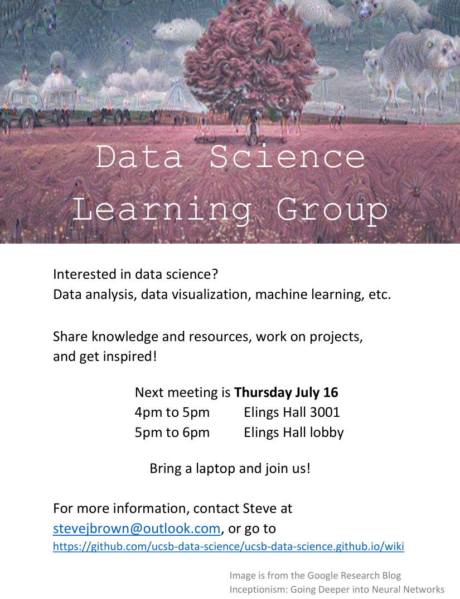

UCSB Data Science
surfing the big data wave

Cowabunga!
Here's an initial web space to be built up by our user group.
Wiki
-- community notes
2015-07-16 meeting:
git & github
(bbest)
rss_article_recommender
(stevejbrown)